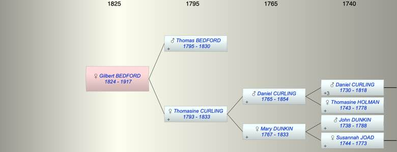

| [Index] |
| Gilbert BEDFORD (1824 - 1917) |
|  |
| b. 1824 at St Laurence |
| d. 18 Jul 1917 at Ontario, Canada aged 93 |
| Parents: |
| Thomas BEDFORD (1795 - 1830) |
| Thomasine CURLING (1793 - 1833) |
| Siblings (4): |
| Thomasin BEDFORD (1819 - ) |
| Mary BEDFORD (1822 - 1881) |
| William BEDFORD (1827 - 1827) |
| George BEDFORD (1829 - 1894) |
| Events in Gilbert BEDFORD (1824 - 1917)'s life | |||||
| Date | Age | Event | Place | Notes | Src |
| 1824 | Gilbert BEDFORD was born | St Laurence | Note 1 | ||
| 1830 | 6 | Death of father Thomas BEDFORD (aged 35) | |||
| 1833 | 9 | Death of mother Thomasine CURLING (aged 40) | |||
| 18 Jul 1917 | 93 | Gilbert BEDFORD died | Ontario, Canada | Note 2 | |
| Note 1: bap St Laurence 15 Aug 1824 ex FS |
| Note 2: death at Seymour, Northumberland, Ontario ex FS |
| Created on a Mac™ using iFamily for Mac™ on 8 Oct 2023 |